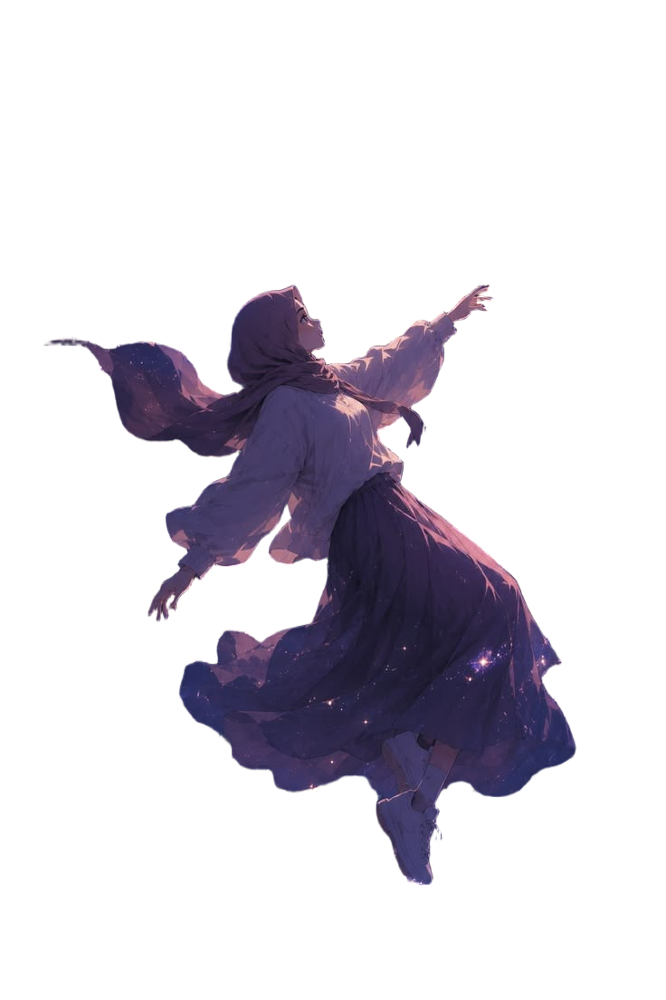

GNSS researcher working on satellite navigation, positioning performance, resilient PNT, and navigation technologies in challenging environments.
Reliable positioning, navigation and timing in challenging and GNSS-limited environments.
Positioning accuracy, receiver performance, RTK and satellite navigation evaluation.
Navigation approaches integrating GNSS and complementary sensors.
RTK positioning performance evaluation under diverse environmental conditions.
Explore project →Navigation prediction and analysis under lunar dust hazards.
Explore project →Simulation and analysis of satellite navigation and space applications.
Explore project →Real-Time Kinematic Performance Evaluation of Mosaic-H GNSS Receiver on UAV Platforms Under Diverse Environmental Conditions.
Global Positioning Systems →Multi-Sensor Geospatial Characterization of the Egyptian Western Desert as a Functional Lunar Analogue.
Icarus →